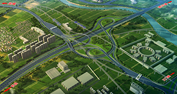
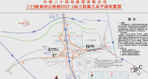
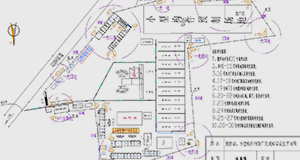

工程概况
三门峡黄河公铁两用桥公路南引桥及南引线起点位于三门峡黄河公铁两用桥合建段南岸公铁分离墩处，路线以桥梁形式接出后向东南跨越国道G310后转
向正南，在七里堡村东落地后设置主线收费站，而后前行跨越连霍高速，设置互通立交，路线继续向南，设置匝道收费站，在土桥村北与国道G209交叉，到
达项目终点。路线全长2.182公里。工程按双向六车道高速公路标准设计，设计速度100公里/小时，路基宽度32.5米，桥翘设计荷载等级为公路-I级。
- 
- 
- 
主要工程量为路基填方141万平方米，挖方168万立方米，被交通连霍高速主线桥价款248.08米/1座；天桥225米/2座；涵洞19道，通道11道。互通式立
交1处（变形双喇叭形），天桥2处、拆除天桥2处，桥梁主要分为以下部分：
（1）南引桥，中心柱号K1+311.750,交角90°，桥梁总长861.5m。
（2）F匝道桥，中心柱号FK0+335.097，交角90°，桥梁全长183m，小桩号一侧接南引桥右幅第七联岔口。
（3）P匝道桥，中心桩号PK0+142.425，除2号桥墩设置在连霍会告诉中央分隔带呃逆，桥墩交角需设计为66.2°之外，其余墩交角均为90°，桥梁全长
93.03m，大桩号一侧接A匝道第二联岔口。
（4）A匝道桥，中心桩号AK0+248.025，除2号桥墩设置在连霍高速中央分隔带内，桥墩交角需设计为35.8°之外，其余桥墩交角均为93°，桥梁全长
151.53m。
（5）B匝道1号桥，中心桩号BK0+052.789，交角90°，桥梁全长47m。
（6）B匝道2号桥，中心桩号BK0+291.084，交角90°，桥梁全长36.9m。
（7）B匝道3号桥，中心桩号BK0+378.461，交角110°，桥梁全长87m。
（8）E匝道桥，中心桩号EK1+155.839，交角90°，桥梁全长136.53m，平面线形位于R=100m圈曲线上。
（9）C匝道桥，中心桩号CK0+516.270，交角65°，桥梁全长105m。
（10）苍龙涧河大桥，中心桩号LK125+498.163，交角90°，桥梁全长248.08m。
（11）1号天桥，中心桩号TK0+360.497，交角80°，桥梁全长128m。
（12）2号天桥，中心桩号TK0+076.304，交角90°，桥梁全长97m。